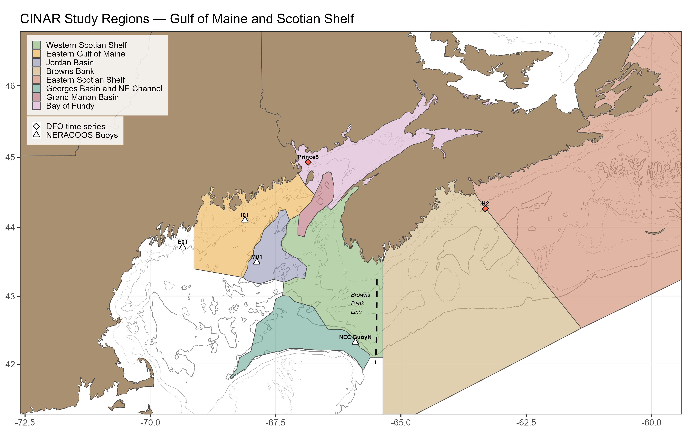

About These Figures
Each figure shows the seasonal cycle of a satellite-derived environmental variable — sea surface temperature (SST) or chlorophyll a — within a selected region for a single year, plotted against the full multi-decadal climatology. These plots provide environmental context for the regional Calanus finmarchicus biomass and sentinel zooplankton indicators presented elsewhere on this site. SST tracks the thermal habitat that sets metabolic rates, developmental timing, and species ranges; chlorophyll a is a proxy for phytoplankton biomass and serves as a first-order indicator of food available to grazing copepods.
Data Source
Chlorophyll a. ESA Ocean Colour Climate Change Initiative (OC-CCI) version 6 daily Level-3 product, ~4 km spatial resolution, 1998–present. OC-CCI is a multi-sensor merged product (SeaWiFS, MODIS-Aqua, MERIS, VIIRS, OLCI) bias-corrected to a common reference, providing a consistent long-term record suitable for trend and climatology analysis. Distributed via the NOAA NEFSC ERDDAP server.
Sea Surface Temperature. NOAA Optimum Interpolation SST (OISST) v2.1, daily 0.25° resolution, 1982–present (Huang et al. 2021). OISST blends in situ buoy and ship observations with AVHRR and other satellite radiances to produce a gap-free analysis. Distributed via the NOAA CoastWatch ERDDAP server.
Regional Environmental Indices
The satellite data are high-resolution gridded products — the figures here distill them into place-based seasonal indices designed to track year-to-year change and provide historical context for any given observation. CINAR polygons focus on the Bay of Fundy and adjacent shelf regions, defined to align with NOAA EcoMon survey strata while reflecting local hydrographic features and regular DFO sampling along the Brown’s Bank and Halifax lines. These are the same polygons used for the Calanus finmarchicus biomass aggregation, so satellite indicators can be compared directly against modeled biomass within the same footprint.
Within each polygon, daily satellite pixels are coverage-fraction weighted and aggregated into 8-day composites following the MODIS standard window convention (46 windows per year starting on day-of-year 1, 9, 17, …). 4 km OC-CCI pixels are first averaged into ~12 km blocks before extraction to give equal weight to each sub-area and mitigate bias toward systematically cloud-clear regions. Per-window uncertainty is reported as a pooled pixel-level standard deviation that combines within-day spatial heterogeneity and between-day temporal variability.
How to Read the Plot
| Element | Meaning |
|---|---|
| Light grey ribbon | Full historical range across all years (climatological min/max) |
| Dark grey ribbon | Climatological mean ± 1 SD across years |
| Dashed grey line | Climatological 8-day mean |
| Coloured line + error bars | Selected focus year (green for chlorophyll a, blue for SST); error bars show the pooled 8-day pixel SD within the polygon |
The maximum and total pixels observed for the year are annotated on the figure. Windows are flagged as “sparse” when fewer than a minimum number of valid pixel-days contribute to the composite, in which case no value is shown for that window. Plots are marked “Sparse data” when the selected year has insufficient pixel coverage across the season.
References
Sathyendranath, S., et al. (2019). An ocean-colour time series for use in climate studies: the experience of the Ocean-Colour Climate Change Initiative (OC-CCI). Sensors, 19(19), 4285.
Huang, B., et al. (2021). Improvements of the Daily Optimum Interpolation Sea Surface Temperature (DOISST) Version 2.1. Journal of Climate, 34(8), 2923–2939.
Runge, J. A., et al. (2025). Zooplankton monitoring at fixed station time series in the Gulf of Maine. Frontiers in Marine Science.